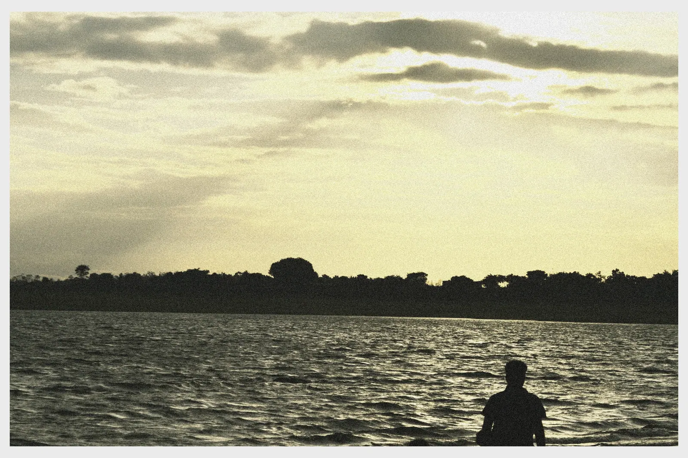

PHOTOGRAPHY · INDIA
A study of
light & place.
Quiet frames from the roads I take, the landscapes I find, and the moments that ask me to stay a little longer.
Explore the work
MYSORE · WATERSIDE · LAST LIGHT01 / 193
THE COLLECTION
Selected frames
193 frames
across 16 collections
Mysore Water


Madras Sky


Topslip


Street Studies


Mysore


Portraits


Sky Studies


1937 Vauxhall 14DX


Mark II Ambassador


Soilside


Salem


Mangalore · 2025


Pollachi


Pondicherry


Malleshwaram


After Hours


BEHIND THE LENS
Looking closer.
Feeling more.
Photography is a way of paying attention, to the texture of a place, the shape of a passing cloud, and the stories held quietly in between.
Nithilan photographer